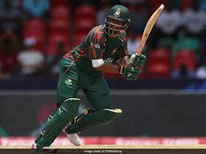
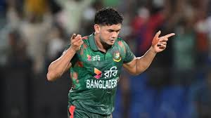
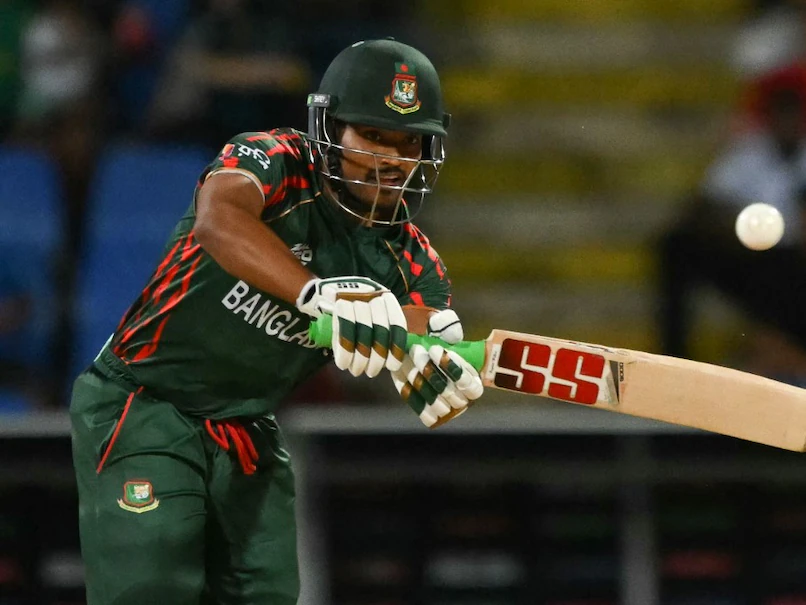

Bangladesh Test Team
Improving side with growing Test credentials.
About Bangladesh Test Team
Country: Bangladesh
Home Ground: Various (e.g., Mirpur, Dhaka)
Captain: Najmul Hossain Shanto
Coach: Chandika Hathurusingha
Bangladesh’s Test team has shown significant improvement, with strong performances in home conditions.
Top Players

Zakir Hasan
Batsman, opener.

Mahmudul Hasan Joy
Batsman, top-order.

Mushfiqur Rahim
Batsman, experienced anchor.

Litton Das
Wicketkeeper-batsman, dynamic.

Shakib Al Hasan
All-rounder, left-arm spinner.

Mehidy Hasan Miraz
All-rounder, off-spinner.

Taijul Islam
Spinner, left-arm orthodox.

Taskin Ahmed
Bowler, pace bowler.

Khaled Ahmed
Bowler, pace bowler.

Mominul Haque
Batsman, middle-order.

Najmul Hossain Shanto (C)
Captain, batsman.